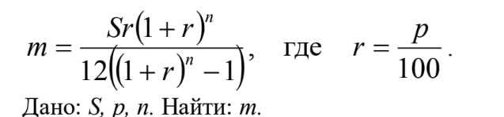

Написать функцию вычисляющую выплату m по займу в S рублей на n лет под процент p вычисляется по формуле:

Написать функцию, которая подбирает такой срок n для указанных S и p, чтобы сумма выплаты была меньше x и при этом срок был минимальным.
def func1(): ... def func2(): ... func1() ...
Показать тетрадку (нет, нельзя потом, если вы забыли или потеряли)